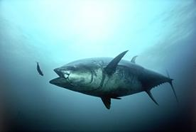

Οι αλληλεπιδράσεις μεταξύ των ειδών έχουν σημαντικό αντίκτυπο στα ιδιαίτερα χαρακτηριστικά των ειδών. Εστιάζοντας στις σχέσεις θηρευτή-θηράματος, τα γνωρίσματα που είναι κρίσιμα για τον καθορισμό της ικανότητας του αρπακτικού να συλλάβει το θήραμα του, τείνουν να αυξήσουν τη συχνότητα του πληθυσμού των αρπακτικών ζώων, δηλαδή περισσότερα είδη αναμένεται να μεταφέρουν αυτά τα χαρακτηριστικά στις μελλοντικές γενιές. Ανάλογα, χαρακτηριστικά που ενισχύουν την ικανότητα του θηράματος για την αποφυγή των θηρευτών του επίσης τείνουν να αυξήσουν τη συχνότητά τους στις επερχόμενες γενιές. Δεδομένου ότι τα χαρακτηριστικά που έχουν επιλεγεί για κάθε εταίρο της σχέσης δεν είναι συμβατά, η σχέση θηρευτή-θηράματος συνεχώς εξελίσσεται. Ενδιαφέρον λοιπόν παρουσιάζει, η συμπεριφορά του θηρευτή, η οποία καθορίζει σε μεγάλο βαθμό τα χαρακτηριστικά του θηράματος και το αντίστροφο.
Ο τόνος είναι χαρακτηριστική μορφή θηρευτή. Πηγή: http://en.wikipedia.org/wiki/File:Thunnus_thynnus.jpg